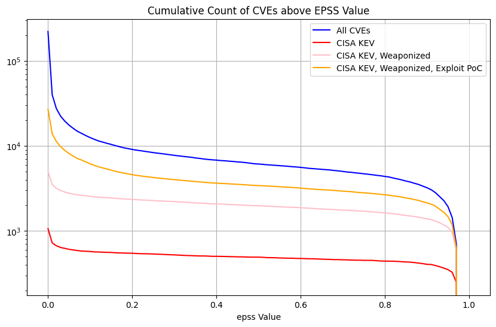
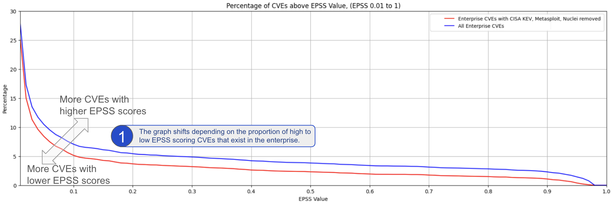

EPSS Thresholds¶
Overview
As we saw from the Risk section, (and we'll see later in the Vendor and Organizations section), focusing on known exploited, known weaponized exploits, or a significant probability of exploit, is an effective approach to risk mitigation and prevention.
-
We start by looking at the EPSS Coverage, Efficiency, Effort figure to understand the tradeoffs between three key parameters that you may use when determining your optimal remediation strategy: coverage, efficiency, and level of effort.
-
We then define an example Remediation Policy for an organization, and see what the impact is of picking an EPSS threshold using 2 data sets
- EdgeScan Detected CVEs
- Monte Carlo Random Sample
The guidance here is highly opinionated and prescriptive and applied to a user context - not official EPSS guidance as FIRST EPSS can't be prescriptive for your context
At the beginning of the guide it was stated that the "writing style" in this guide is "succinct and opinionated".
This section "leads with an opinion", and associated rationale.

EPSS Model¶
Remediation Prioritization for your Environment¶
Per What Does EPSS Provide?, the EPSS group provides a Coverage, Efficiency, Effort figure showing the tradeoffs between alternative remediation strategies. This is based on CVEs detected by the EPSS Environment (representative of an Enterprise environment).

See original post.

Note
A Linear scale is used here because, while a log scale shows more detail at the lower EPSS Probability range, people not used to thinking in log scales may not be able to see the forest for the trees i.e. not see the bigger picture because of the detailed log view.
The linear and log scale plots represent the same data.
Start by picking an EPSS Threshold around 10%
Start by picking an EPSS Threshold around 10%, and adjust based on your CVE data and your capacity to remediate the CVEs above that Threshold (in conjunction with CVSS Severity or other Risk factors).
- Plotting the data for your organization can help refine this EPSS Threshold value.
- You can further adjust this EPSS Threshold as CVEs are remediated, and as you gain more experience with EPSS.
Remediation Policy for an Enterprise¶
For this analysis, our policy will be (for our first pass triage independent of business and runtime context per the Scope of this guide):
- Remediate vulnerabilities that have weaponized exploits or evidence
of exploitation in the wild or in our organization i.e. Weaponized
Exploitation and above

- independent of EPSS score per Using EPSS with Known Exploitation
- Remediate CVEs with EPSS score above some threshold
- we need to understand the effect of picking a threshold, so we do some analysis...
- This is the same policy used in our back of the napkin Model Remediation Policy, but here we additionally "remediate CVEs with EPSS score above some threshold".
Weaponized Exploits and EPSS
One could make the argument for not using "Weaponized Exploits" as part of our policy: EPSS has all those other variables in the model, basically it's extracted all the information out of those, so trying to do something with those next to EPSS doesn't make sense.
But this could also be said of CISA KEV.
Throughout this guide, it's been shown that in some cases EPSS scores will be persistently low even when there is evidence of exploitation, (and EPSS should be used in conjunction with evidence of exploitation) e.g.
In this case, we're taking the same approach; overall the population for weaponized is small - and an org will have a subset of these - so the extra effort is generally low. Also, mature risk based prioritization schemes may be using weaponized exploits as an input already - and want to add EPSS as pre-threat intel e.g.
Let's assume we'll use the different groups for Likelihood of Exploitation that we defined earlier - and used the data sources we have available to determine the CVEs in each group
- Active Exploitation:
- CISA KEV
- Active Exploitation + Weaponized Exploits:
- CISA KEV + Metasploit + Nuclei
- Active Exploitation + Weaponized Exploits: + Exploits with Proof of Concepts:
- CISA KEV + Metasploit + Nuclei + ExploitDB
- All CVEs
ExploitDB contains a subset of CVEs with PoC
A Commercial CTI as used by the author has ~100K CVEs with Exploit PoC (versus the ~25K in the ExploitDB data source we used) so this number is not representative of reality. Users can repeat the analysis with additional data.
Count of CVEs above EPSS value for All CVEs¶
| Plot Type | Plot |
|---|---|
| Count of CVEs above EPSS value (Linear scale Y-axis) |  |
| Count of CVEs above EPSS value (Log scale Y-axis) |  |
| Count of CVEs above EPSS value (Graph range EPSS 0.01 to 1.0 Linear Scale Y-Axis) |  |
Here we're showing the counts of CVEs above EPSS values for the groups (because we want to pick an EPSS threshold above which we would remediate the CVEs)
Per the policy we defined, we're going to remediate CVEs in CISA KEV and Weaponized (independent of EPSS score).
- So later we'll remove these from our counts of CVEs above EPSS values. In other words, subtract the pink line from the blue line in the graphs above
Observations
- For All CVEs, and Exploit Proof Of Concept, the vast majority of CVEs are below some low EPSS score
- For EPSS < 0.01, the count of CVEs increases significantly so it
makes it harder to see the details for EPSS >= 0.01. So we can
either:
- use a Log scale on the Y axis
- plot only for EPSS >= 0.01, and use a linear y-axis
- The plot shows
- the count of CVEs above the EPSS value for the given thresholds - because we will remediate CVEs above an EPSS value, and we want to see how many we would need to remediate based on the EPSS value
- All CVEs ~220K (our enterprise environment will contain a subset of these)
- We can see that below EPSS score of approximately 0.1, there's a
significant increase in the count of CVEs for All CVEs, and Exploit
PoC
- in other words, below EPSS score of approximately 0.1, for a small change in EPSS score, there's a very large change in count of CVEs we would need to fix
- We can see that between EPSS score of approximately 0.9 and 0.1,
there's a relatively small increase in the count of CVEs as we
decrease EPSS score
- in other words, for a large change in EPSS score in the range 0.1 to 0.9, there's a relatively small change in count of CVEs we would need to remediate - so picking an EPSS value at or near EPSS 0.1 means we cover a very large range of probability of exploitation for a relatively small increase in the count of CVEs
Policy Applied to an Enterprise¶
Info
We know what the shape of the graph looks like for the count of CVEs above EPSS values for All CVEs (~220K) as above.
An organization is only concerned with the CVEs in its environment - not all CVEs.
- A typical enterprise will have 10K's of CVEs (depending on their tech stacks and ability to detect CVEs).
- Here we will look at all the CVEs detected by EdgeScan scans of many enterprises.
EdgeScan Data¶
Here we use EdgeScan detected CVEs as the representative data set for our Enterprise.

Note
- The plot only shows EPSS > 0.01, so we can see the detail in the higher EPSS scores (rather than using a log y scale).
- The blue line represents the count of CVEs above an EPSS Value for all CVEs detected by EdgeScan.
- The red line is when the CISA KEV, and Weaponized (Metasploit, Nuclei) CVEs are removed per the Remediation Policy we defined above i.e. the actual effect of choosing an EPSS threshold for our Remediation Policy.
Observations
We can see that, for both lines, the percentage of CVEs above EPSS Score 0.1 (10%) is 5% and 7%.
The difference in % of CVEs between 0.9 and 0.1 EPSS score
- for red (actual) is ~3%
- for blue (all) is ~5%
The takeaways are the same as per the EPSS Model - Remediation Prioritization for your Environment:
Start by picking an EPSS Threshold around 10%
Start by picking an EPSS Threshold around 10%, and adjust based on your CVE data and your capacity to remediate the CVEs above that Threshold (in conjunction with CVSS Severity or other Risk factors).
- Plotting the data for your organization can help refine this EPSS Threshold value.
- You can further adjust this EPSS Threshold as CVEs are remediated, and as you gain more experience with EPSS.
Enterprise Data¶
Looking at real CVE data from different enterprises, there is a significant variation in the graphs of counts of CVEs above an EPSS score, and associated "inflection point".
In other words, the general guidance to "Start by picking an EPSS Threshold around 10%" stands, but picking the EPSS value from the plot for your data will give you better coverage/efficiency/effort.
We can generalize as follows:

Monte Carlo Simulation for a Typical Enterprise¶
Monte Carlo Analysis
CVEs in an Organization vs All CVEs
- We're more interested in a sample of CVEs (not all CVEs) e.g. the sample in our organization which will likely be a much smaller subset of all CVEs.
- Each organization will have a different subset of CVEs, and this data is private, so we can't do an analysis of that.
- A typical enterprise will have ~10K's of CVEs i.e. we know the
counts of CVEs - but not the CVEs themselves.
- So we can plot a random sample of that count of CVEs, and repeat many times to see what the overall plot looks like and if it is useful.
- And we can do this for different counts of CVEs e.g. 1K, 11K (5%) CVEs, or 44K (20%) CVEs
We need to understand the count of CVEs with EPSS score above some threshold
- So we pick a sample of ~40K CVEs
- But we don't know which ~40K subset of CVEs are relevant for a typical Enterprise
- Instead of picking an exact ~40K subset of CVEs, we can pick lots
of ~40K subsets of CVEs randomly, and plot them all.
- We would know that any Enterprise with the number of CVEs would be represented in those plots
- In other words, Monte Carlo Simulation for a Typical Enterprise
Warning
- Random sampling is used here to create the samples.
- The distribution of counts of EPSS values for a typical enterprise won't be a random distribution i.e. the counts of CVEs with high EPSS values will be higher.
- But the % change in EPSS scores between EPSS score 0.9 and 0.1 is consistent with the examples above.
Recipe
- Take random % sample of CVEsÂ
- where, e.g. 20%, corresponds to ~44K CVEs of ~220K CVEs
- Plot the result
- Repeat steps 1,2, e.g. 10,000, times
- It turns out that the result (shape) is pretty much the same if we repeat 100,000 times
- With a large number of iterations (e.g. 10,000), the result is a thick band (composed of 10,000 individual lines)
- The gray band represents any and all possible outcomes for the sample.
- We apply this recipe to
- CVEs: CVEs of different population sizes (# CVEs)
- CISA KEV and Weaponized CVEs removed (EPSS > 0.01): The same populations
- with CISA KEV and Weaponized CVEs removed because we want to see the effect of picking an EPSS threshold and our example policy says we need to remediate CISA KEV and Weaponized CVEs anyway
- with EPSS > 0.01 to zoom in on the detail.
| # CVEs | CVEs | CISA KEV and Weaponized CVEs removed (EPSS > 0.01) |
|---|---|---|
| 0.5% (~1.1K) |  |
 |
| 5% (~11K) |  |
 |
| 20% (~44K) |  |
 |
Info
This analysis is independent of the counts of each CVE in the organization i.e. how many occurrences of each CVE, e.g. CVE-2021-44228, are there in the organization.Â
Observations
- We can see that below EPSS score of approximately 0.1, there's a
significant increase in the count of CVEs for All CVEs
- in other words, for a small decrease in EPSS score, there's a very large increase in count of CVEs we would need to fix
- We can see that between EPSS score of approximately 0.9 and 0.1,
there's a relatively small increase in the count of CVEs as we
decrease EPSS score
- in other words, for a large change in EPSS score in the range 0.1 to 0.9, there's a relatively small change in count of CVEs we would need to remediate - so picking an EPSS value at or near EPSS 0.1 means we cover a very large range of probability of exploit
- in other words, if we're going to remediate CVEs with EPSS >= 0.9, then it doesn't cost us much to remediate CVEs with EPSS > 0.1 (while covering a relatively large range of probability of exploit)
- For 0.5% (~1.1K) of CVEs plot, the width of the band for EPSS 0.2 is ~250 and for EPSS 0.9 is ~200 CVEs
- For much bigger populations, e.g. 20% (~44K), the width of the band is not much wider (as we'd expect given only a small percentage of CVEs have an EPSS score above 0.1)
Start by picking an EPSS Threshold around 10%
Start by picking an EPSS Threshold around 10%, and adjust based on your CVE data and your capacity to remediate the CVEs above that Threshold (in conjunction with CVSS Severity or other Risk factors).
- Plotting the data for your organization can help refine this EPSS Threshold value.
- You can further adjust this EPSS Threshold as CVEs are remediated, and as you gain more experience with EPSS.
Takeaways
- For any organization, a large change in EPSS score in the range 0.1 to 0.9 results in a relatively small change in count of CVEs we would need to remediate - for a very large range of probability of exploitation (10%-100%).
- Start by picking an EPSS Threshold around 10%, and adjust based on your CVE data and your capacity to remediate the CVEs above that Threshold (in conjunction with CVSS Severity or other Risk factors).
- Plotting the data for your organization can help refine this EPSS Threshold value.
- You can further adjust this EPSS Threshold as CVEs are remediated, and as you gain more experience with EPSS.